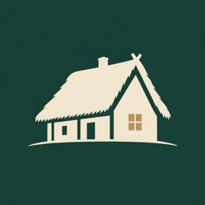

Dorfleben von einst
Geschichten vom Landleben · 1850–1914
Kanal unterstützen
Jede Folge braucht viele Stunden Recherche in alten Büchern. Wenn dir die Videos gefallen, kannst du die Arbeit mit einem kleinen Betrag unterstützen. Den Betrag bestimmst du selbst.
Mit Ko-fi AM EINFACHSTEN
Karte oder PayPal, in Euro · einmalig oder monatlich
Mit PayPal
In PayPal „Geld senden“ wählen und diese Adresse eingeben
Per Überweisung
Ganz normal von deinem Bankkonto, in Euro (SEPA)
Empfänger
IBAN
BIC
VerwendungszweckDorfleben von einst
Zum Kanal
Alle Folgen findest du auf YouTube.
Dorfleben von einst auf YouTube